Petite balle,grandesambitions
Passion, performance et convivialité. Plus de 200 licenciés, deux équipes fanion en Nationale et une école de ping qui forme les talents de demain. À l'USTT Valenciennes, on joue pour gagner, et on reste pour l'ambiance.

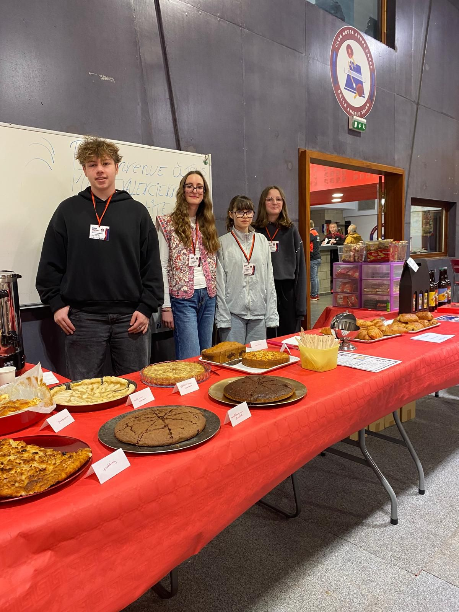
Un club qui pèse, un club qui rassemble
L'USTT Valenciennes est l'un des plus grands clubs de tennis de table des Hauts-de-France. Né en 2005 de l'union de trois clubs historiques de la ville, il réunit débutants, joueurs loisir et compétiteurs confirmés.
Un cadre motivant et structuré pour progresser, se challenger et partager une passion commune autour de la petite balle blanche.
- 4 entraîneurs diplômés
- Entraînements du lundi au samedi
- Un club house pour se retrouver après les matchs
Le club en un coup d'œil
Le ping se joue à tout âge
De l'éveil des 4-7 ans aux podiums nationaux vétérans, chacun trouve son créneau.
Compétition
18 équipes, de la Départementale à la Nationale 2. Se dépasser et porter haut le rouge et blanc.
École de ping
Baby ping, apprentissage, perfectionnement : des séances ludiques et exigeantes.
Loisir
Jouer, progresser et partager un bon moment chaque semaine, dans une ambiance chaleureuse.
Handisport
Une section dédiée, encadrée, pour pratiquer en toute inclusion.
Sport santé
Bouger, garder la forme et le lien social, à son rythme, le samedi matin.
Vétérans
Une section active, présente jusqu'aux podiums des Championnats de France.
L'ambition au niveau national
Deux équipes portent haut les couleurs de l'USTT Valenciennes en championnat national.
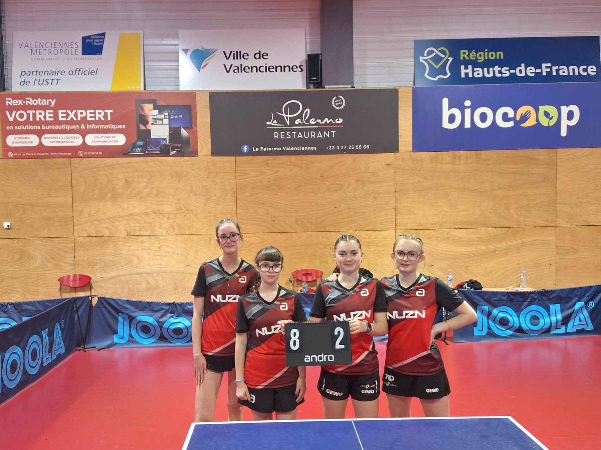
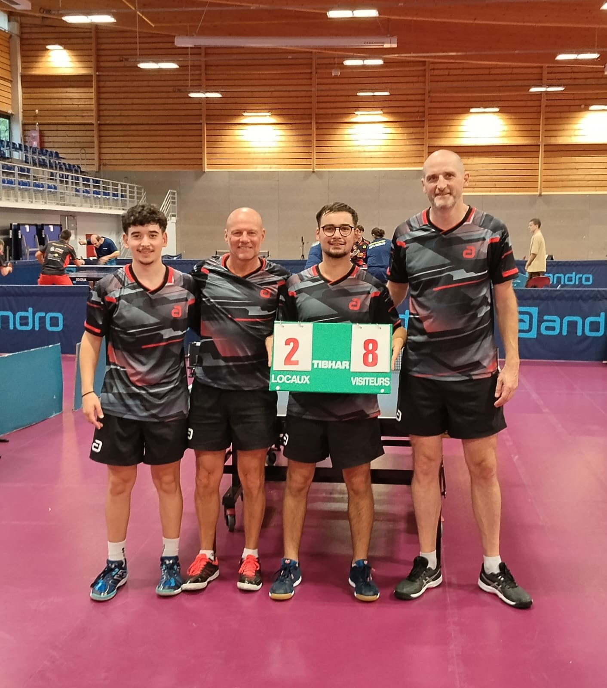
Derrière elles, 16 autres équipes engagées en championnat régional, départemental et vétérans.
Bien plus qu'un club de sport
Tournoi interne Angèle Joing, assemblée générale, pots de l'amitié, rencontres jeunes… la convivialité se cultive sur la table comme autour.
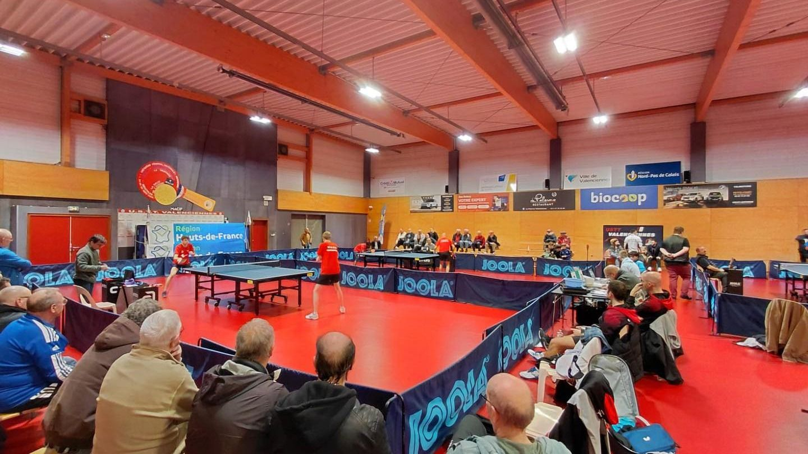
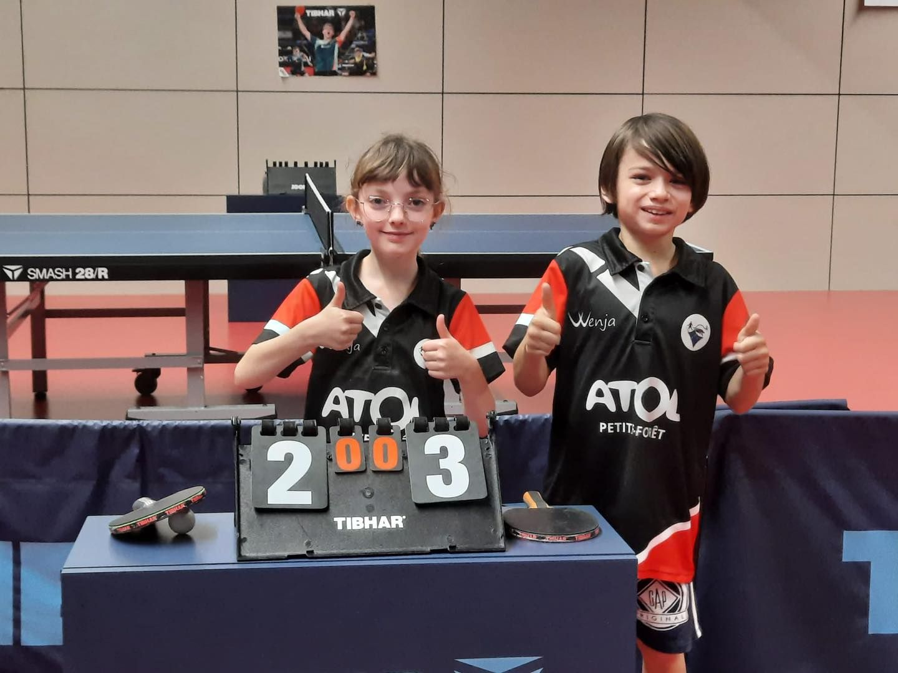

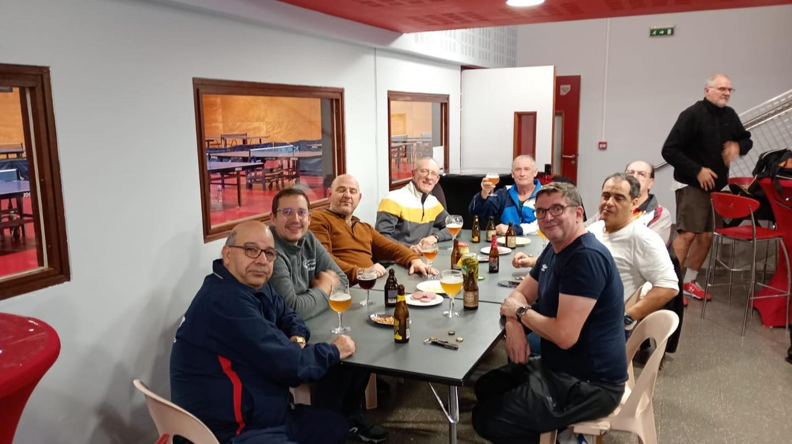
Nos partenaires
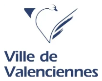
Ville de Valenciennes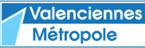
Valenciennes Métropole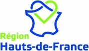
Région Hauts-de-France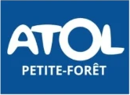
ATOL Petite-Forêt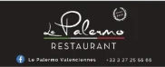
Le Palermo 3 Brasseurs
3 Brasseurs Rex-Rotary
Rex-Rotary Valmotors BMW
Valmotors BMW Performauto Volvo3 BrasseursRex-RotaryValmotors BMWPerformauto Volvo
Performauto Volvo3 BrasseursRex-RotaryValmotors BMWPerformauto VolvoPrêt à taper la balle ?
Débutant ou confirmé, petit ou grand : il y a toujours une place pour vous à l'USTT Valenciennes.